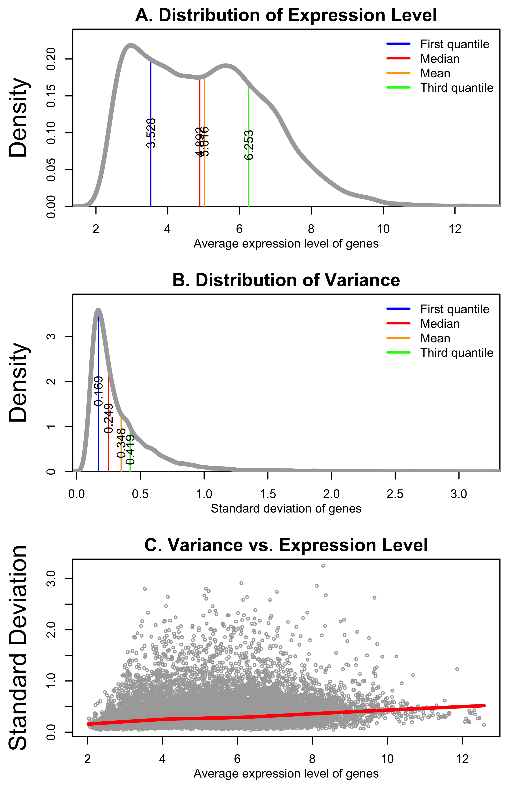
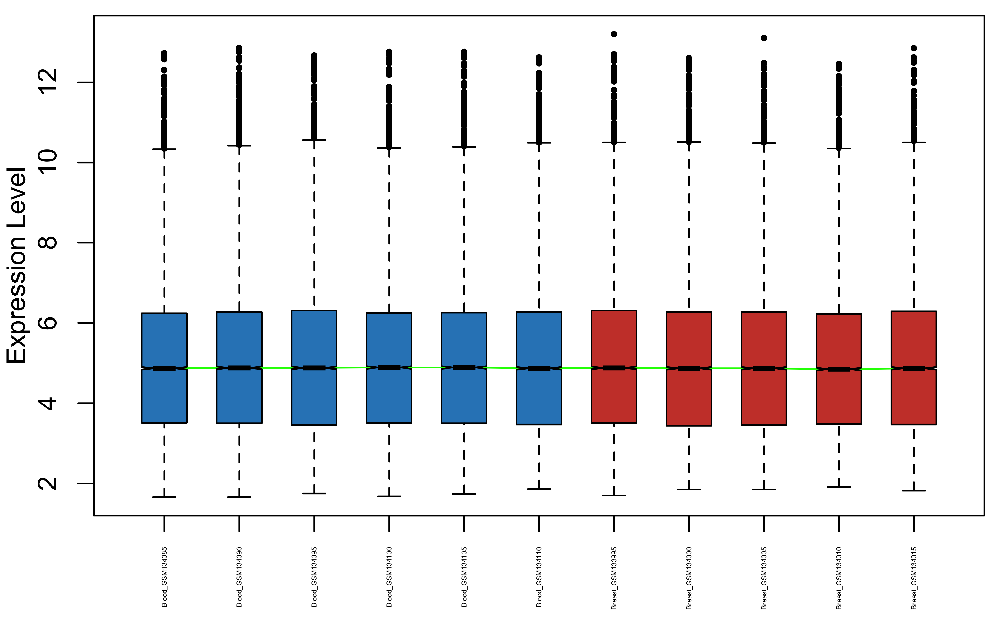
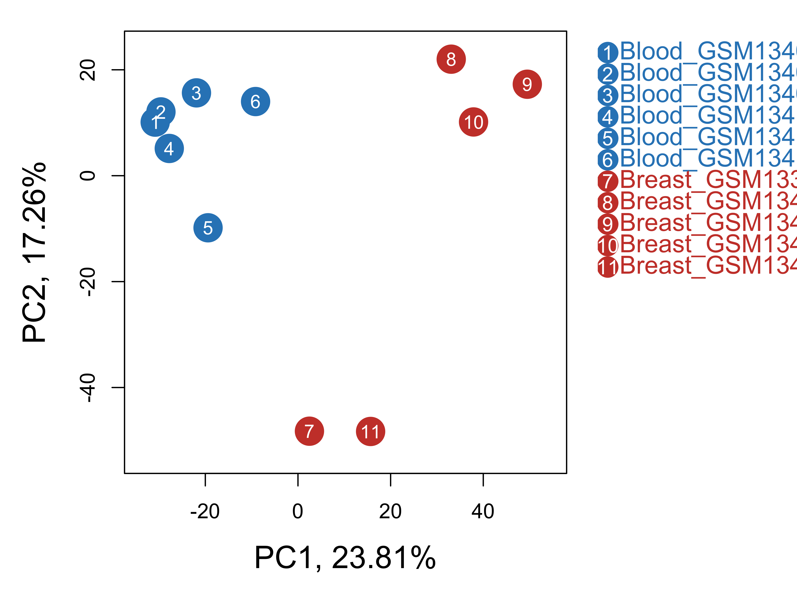
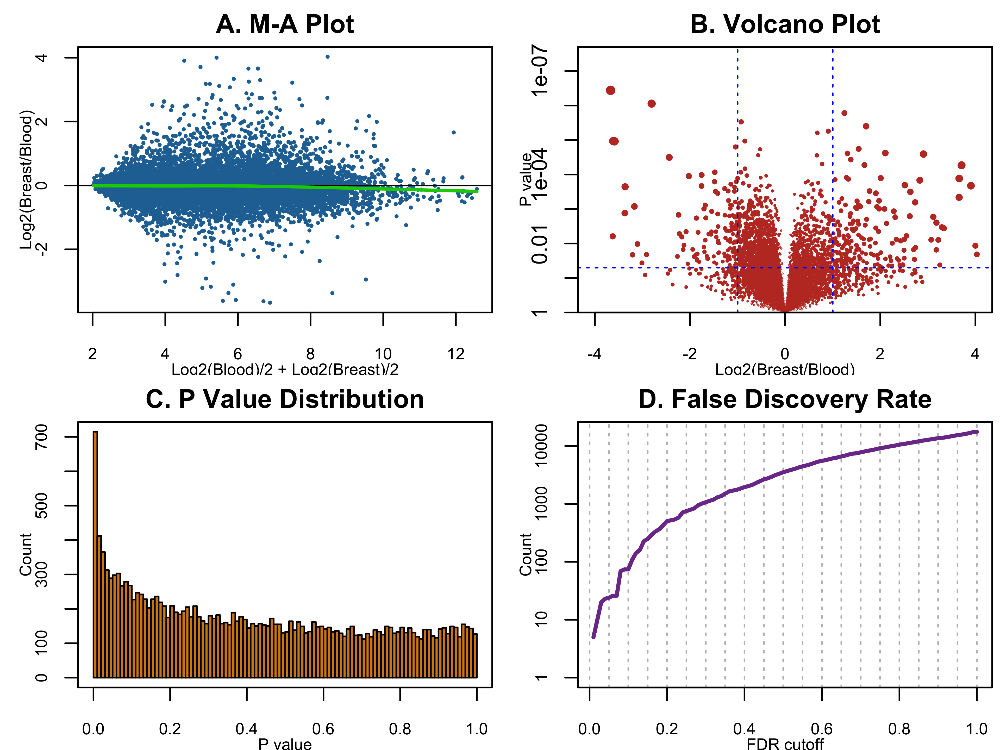
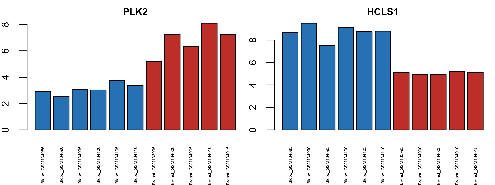
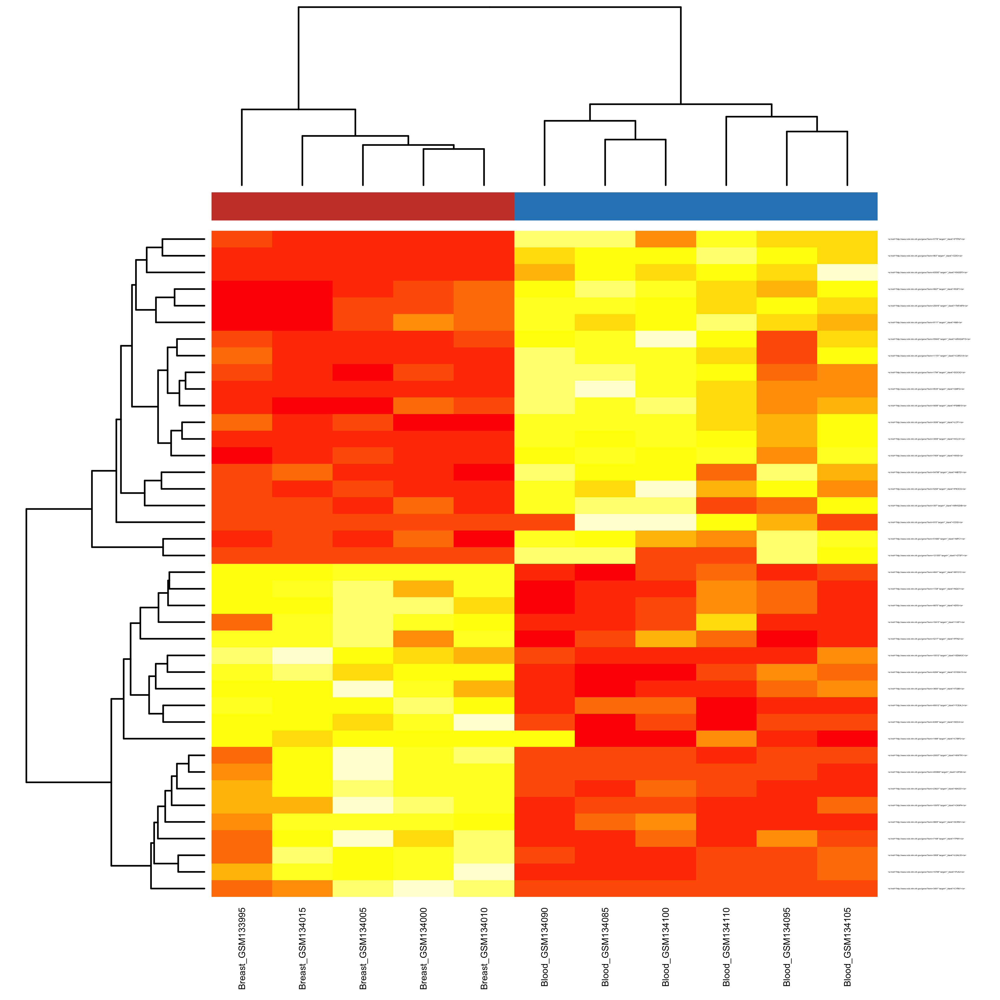

This procedure performs a two-group comparison of all genes in a transcriptome, or similar, data set. It accepts either read count data (RNA-seq) or normalized/log-transformed signal intensity (microarray or RNA-seq) as input. Gene-level analysis will be performed by applying a selected statistical test to the comparison of group means of each genes.
NCI60 tumor cell lines
Microarray data generated from NCI60. Data was normalized by RMA
The analysis results below were based upon the following:
This section analyzes the samples by summarizing their global expression patterns, through descriptive statistics, unsupervised clustering, and sample-sample correlation.
Distribution of average expression level and between-sample variance.

Figure 1.
By comparing gene expression patterns of different samples, observations can be made about the sample similarity. This section compares samples via data distribution, hierarchical clustering, and principal components analysis, which can potentially be used to identify outliers and confounding variables.

Figure 2. Each boxplot summarizes the expression measurements of all genes in one sample. Based on the assumption that all samples have approximately the same global distribution of gene expression measurements, all boxes should look similar regardless of which group they belong to. This assumption is not always true though. For example, normal cells and cancer cells could have dramatically different global patterns of gene expression. The notches of each box indicate the median, the lower and upper sides of the box represent the first and third quantile, and the individual data points out of the whiskers are the outliers (more than 1.5 inter-quantile range from the median).
Figure 3. This is an unsupervised clustering of samples used all genes in the data set. On the clustering tree, the vertical location of their lowest common node of any two samples represents their similarity (lower = more similar). Since the sample grouping information is not used, the splitting of samples into two sub-trees will indicate that these samples belong to different groups due to a known or unknown factor. Unexpected splitting often suggest outliers or confounding variables.

Figure 4. Principal Components Analysis (PCA) is also an unsupervised analysis that converts a large number of correlated variables (genes) into a smaller set of uncorrelated variables called principal components (PCs). Each principal component accounts for certain percentage of total variability of a data set so the PCs can be ordered by their percentages. This figure plots the top two PCs on the two axes. In general, samples closer to each other have more similar gene expression patterns. PCA can be used to identify sample features, such as age, disease, and treatment, that are associated with one or two PCs. It then can be concluded that these features are responsible for part of the total variability in the data set.

Figure 5. The differential expression of all 17647 genes can be visualized in different ways:
Table 1. Number of top DEGs selected via different cutoffs of FDR. FDRs are calculated using the Benjamini&Hochberg method (Controlling the false discovery rate: a practical and powerful approach to multiple testing. Journal of the Royal Statistical Society Series B 57, 289–300. 1995)
| FDR | Higher_in_Breast | Lower_in_Breast | Total |
|---|---|---|---|
| 0.01 | 1 | 2 | 3 |
| 0.02 | 4 | 6 | 10 |
| 0.05 | 13 | 10 | 23 |
| 0.10 | 37 | 41 | 78 |
| 0.15 | 90 | 140 | 230 |
| 0.20 | 179 | 279 | 458 |
| 0.25 | 289 | 445 | 734 |

Figure 6. Top-ranked genes with increased (left) and decreased (right) expression in Breast. Click here to view differential expression of all genes.

Figure 7. Heatmap of the top 20 and 20 DEGs with higher (red) and lower (yellow) expression in Breast. Each row represents a DEG, whose expression measurements are normalized across samples. Samples are clustered by these genes and the columns are colored (blue = Blood and red = Breast).
Click links below to view table or download files:
Check out the RoCA home page for more information.
The terms to represent differential expression can be used quite confusingly. In this report, fold change refers the ratio of two group means in their unlogged form. So a fold change of 2.0 means the average of the second group is increased to twice of the average of the first group; similarly, a fold change of 0.5 means the average is reduced to half. Log2(fold change) equals to the log2-transformation of the fold change. The table below gives a few examples of the conversion of these 2 variables. Log2(fold change) is more suitable for statistical analysis since it is symmetric around 0.
Supplemental Table 1. Fold Change vs. Log(Fold Change) vs. Percentage Change
| Fold change | Log2(fold change) | Percentage change (%) |
|---|---|---|
| 0.125 | -3.000 | -87.500 |
| 0.250 | -2.000 | -75.000 |
| 0.500 | -1.000 | -50.000 |
| 0.667 | -0.585 | -33.333 |
| 0.800 | -0.322 | -20.000 |
| 1.000 | 0.000 | 0.000 |
| 1.250 | 0.322 | 25.000 |
| 1.500 | 0.585 | 50.000 |
| 2.000 | 1.000 | 100.000 |
| 4.000 | 2.000 | 300.000 |
| 8.000 | 3.000 | 700.000 |
The key steps of statistical analysis in this report use existing R/Bioconductor packages and functions.
Supplemental Table 2. R/Bioconductor key functions
| Task | R package | R function |
|---|---|---|
| Hierarchical clustering | stats | hclust |
| PCA | stats | prcomp |
| Differential expression | DEGandMore | DeWrapper |
| Heatmap | stats | heatmap |
| Write Java HTML datatables | awsomics | CreateDatatable |
| Write data to Excel | xlsx | createWorkbook |
To reproduce this report:
Find the data analysis template you want to use and an example of its pairing YAML file here and download the YAML example to your working directory
To generate a new report using your own input data and parameter, edit the following items in the YAML file:
- _output_ : where you want to put the output files
- _home_ : the URL if you have a home page for your project
- _analyst_ : your name
- _description_ : background information about your project, analysis, etc.
- _input_ : where are your input data, read instruction for preparing them
- _parameter_ : parameters for this analysis; read instruction about how to prepare input dataif (!require(devtools)) { install.packages('devtools'); require(devtools); }
if (!require(RCurl)) { install.packages('RCurl'); require(RCurl); }
if (!require(RoCA)) { install_github('zhezhangsh/RoCAR'); require(RoCA); }
CreateReport(filename.yaml); # filename.yaml is the YAML file you just downloaded and edited for your analysisIf there is no complaint, go to the output folder and open the index.html file to view report.
## R version 3.3.3 (2017-03-06)
## Platform: x86_64-apple-darwin13.4.0 (64-bit)
## Running under: OS X Yosemite 10.10.5
##
## locale:
## [1] en_US.UTF-8/en_US.UTF-8/en_US.UTF-8/C/en_US.UTF-8/en_US.UTF-8
##
## attached base packages:
## [1] stats graphics grDevices utils datasets methods base
##
## other attached packages:
## [1] xlsx_0.5.7 xlsxjars_0.6.1 rJava_0.9-9
## [4] DEGandMore_0.0.0.9000 snow_0.4-2 rchive_0.0.0.9000
## [7] colorspace_1.3-2 gplots_3.0.1 MASS_7.3-45
## [10] htmlwidgets_0.9 DT_0.2 kableExtra_0.9.0
## [13] awsomics_0.0.0.9000 yaml_2.1.16 rmarkdown_1.10.3
## [16] knitr_1.18 RoCA_0.0.0.9000 RCurl_1.95-4.9
## [19] bitops_1.0-6 devtools_1.13.4
##
## loaded via a namespace (and not attached):
## [1] Rcpp_0.12.14 highr_0.6 pillar_1.1.0
## [4] plyr_1.8.4 tools_3.3.3 digest_0.6.13
## [7] jsonlite_1.5 evaluate_0.10.1 memoise_1.1.0
## [10] tibble_1.4.2 viridisLite_0.2.0 pkgconfig_2.0.1
## [13] rlang_0.1.6 rstudioapi_0.7 withr_2.1.1
## [16] stringr_1.2.0 httr_1.3.1 xml2_1.1.1
## [19] caTools_1.17.1 gtools_3.5.0 hms_0.4.0
## [22] rprojroot_1.3-2 R6_2.2.2 gdata_2.18.0
## [25] readr_1.1.1 magrittr_1.5 backports_1.1.2
## [28] scales_0.5.0 htmltools_0.3.6 rvest_0.3.2
## [31] KernSmooth_2.23-15 stringi_1.1.6 munsell_0.4.3END OF DOCUMENT